Science Block 01
Tracing dust formation, shock breakout, circumstellar interaction, and the final evolutionary stages of massive stars from the ultraviolet through the infrared.
Block LeadMelissa Shahbandeh
Deputy LeadName to be added
A time-domain astronomy collaboration
From exploding stars to feeding black holes, we use the world’s most powerful observatories to catch the cosmos in the act of changing.
About TSST
Transient Science @ Space Telescope brings together observers, theorists, and data scientists to understand the brief, brilliant events that reshape our universe.
We are a compact team within the Space Telescope Science Institute and Johns Hopkins University. We meet weekly, pool resources and expertise, and collaborate across rapid-response observations, archival discovery, precision cosmology, and new computational tools.
Science Blocks
Our four Science Blocks organize the team’s core research. Select a block title to explore its questions, methods, and connected projects.
Science Block 01
Tracing dust formation, shock breakout, circumstellar interaction, and the final evolutionary stages of massive stars from the ultraviolet through the infrared.
Block LeadMelissa Shahbandeh
Deputy LeadName to be added

Science Block 02
Finding and characterizing distant supernovae to study how stellar explosions, their environments, and the expansion of the universe evolve across cosmic time.
Block LeadDave Coulter
Deputy LeadName to be added

Science Block 03
Using multiply imaged supernovae and their time delays to test cosmology, dark energy, and the expansion rate of the universe.
Block LeadJustin Pierel
Deputy LeadName to be added

Science Block 04
Improving Type Ia supernova observations, models, and systematics to sharpen constraints on dark energy and the history of cosmic expansion.
Block LeadMike Engesser
Deputy LeadName to be added
Beyond the Blocks
Focused observing programs, discovery efforts, and tools that connect multiple areas of the team’s science.
Our “NUTS” HST program explores the fast ultraviolet sky, using early shock breakout and shock-cooling light to constrain core-collapse supernova progenitors.
All-sky surveys reveal tidal disruption events, superluminous and pair-instability supernova candidates, and rare explosions that challenge existing classifications.
JWST observations distinguish newly formed ejecta dust from pre-existing circumstellar dust and probe the late evolution of massive stars.
A systematic search for surviving companions to stripped-envelope supernovae tests binary evolution, companion fractions, and stellar-mass distributions.
High-cadence space-based light curves expose the earliest phases of supernovae and other explosions that conventional ground surveys often miss.
Classification tools such as FLEET help prioritize the most scientifically valuable events within the accelerating stream of survey discoveries.
The people
A collaborative group of scientists based at STScI, Johns Hopkins University, and partner institutions.
We share expertise across supernovae, tidal disruption events, cosmology, gravitational lensing, dust, light echoes, machine learning, and software development.

Supernovae · Progenitors · Dust · CSM interaction

Supernovae · Light echoes · Cosmology · Big data

Star formation · Supernovae · Stellar evolution

Near-infrared spectroscopy · Dust
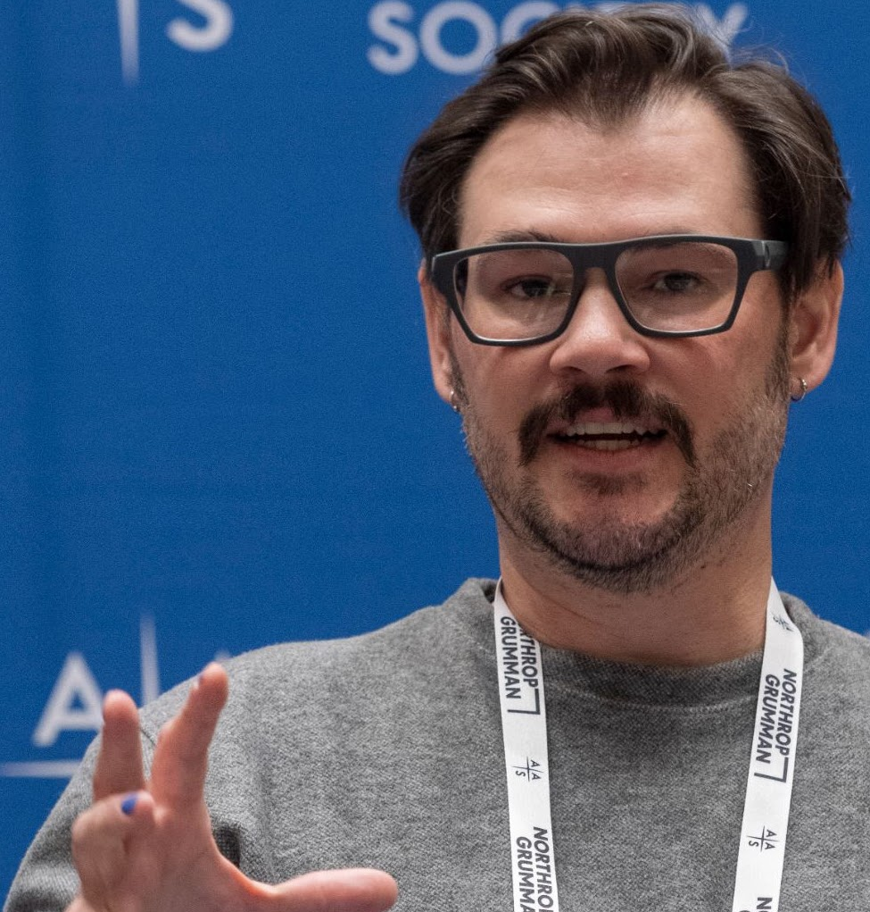
High-z transients · Gravitational-wave follow-up · Software

SN Ia cosmology · Dark energy · Strong lensing

High-z transient science · SN Ia cosmology
Near-infrared spectroscopy · Dust
High-z transients · Gravitational-wave follow-up · Software
SN Ia cosmology · Dark energy · Strong lensing
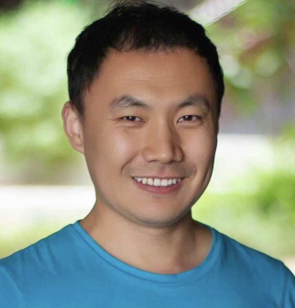
Supernovae · Light echoes

Supernovae · UVOIR spectroscopy · Radiative transfer

SN Ia cosmology · Dark energy · Strong lensing

Astrometry · Slitless spectroscopy · Software

Supernovae · Transients · Cosmology

Stripped-envelope supernovae · Dust · Spectroscopy

Type Ia supernova physics · Cosmology · High-z SNe
Type Ia supernovae · Big data · Machine learning · Cosmology

Supernovae · Transients · Cosmology

Nuclear transients · White dwarf TDEs · Lensing

X-ray astronomy · Tidal disruption events · QPEs

Tidal disruption events · Active galactic nuclei

Supernovae · Cosmology · Light echoes · Data analysis
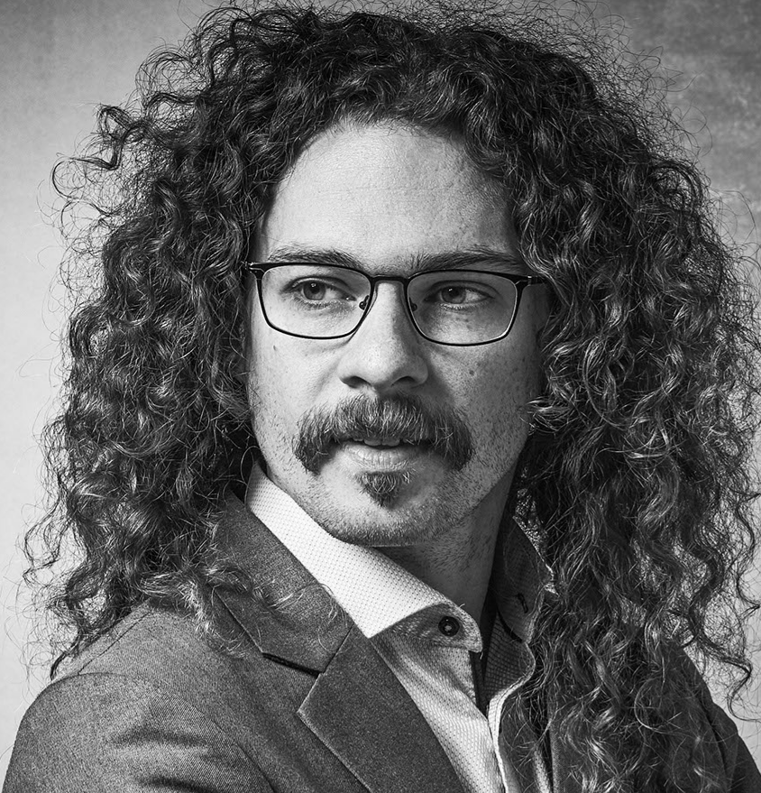
Gas · Gravity · Black holes · Transients
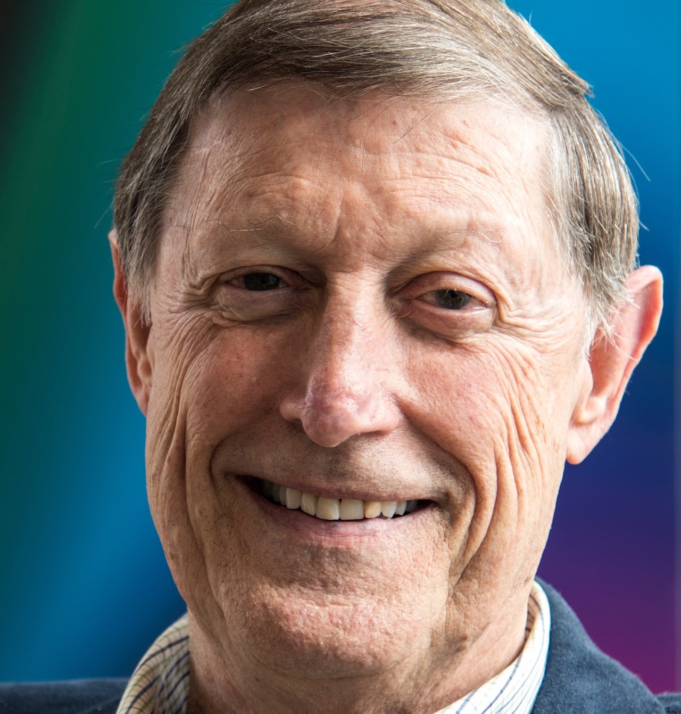
Novae · Accretion disks · Emission-line formation
High-z transient science · SN Ia cosmology
Galaxy evolution · Cosmology · Space-based spectroscopy
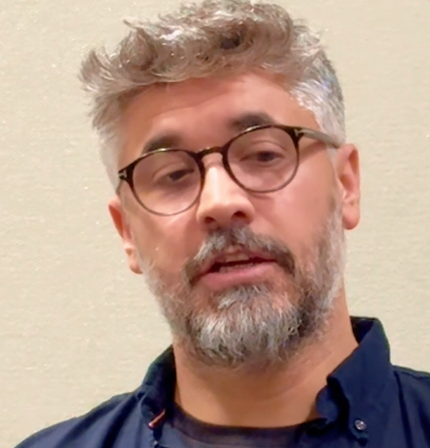
Transient theory · Compact objects · Stellar explosions
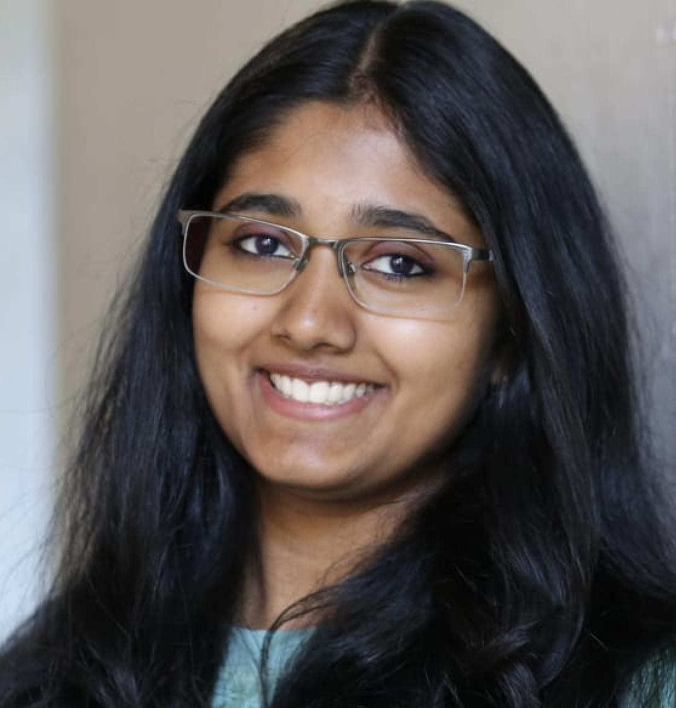
Black-hole growth · TDEs · AGN · High-energy transients
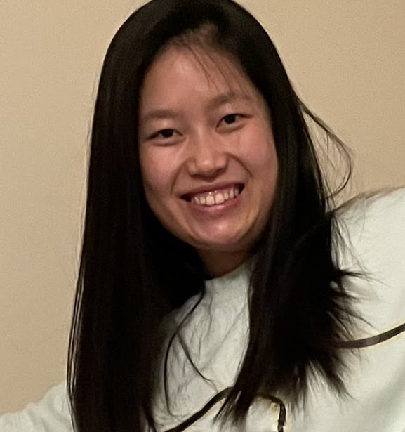
Former TSST team member
Supermassive black holes · TDEs · AGN · Supernovae
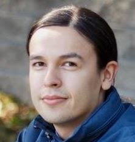
Supernovae · Tidal disruption events · Machine learning
Former TSST team member
Former TSST team member
Former TSST team member
Software development · Transient science
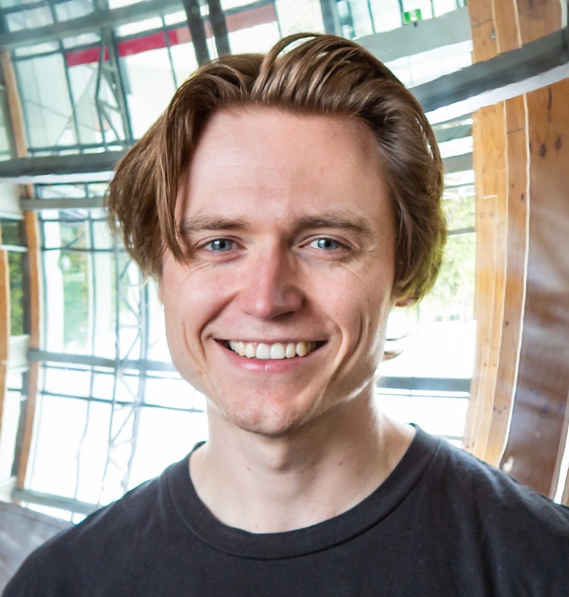
Supernovae · Rapid transients · Time-domain surveys
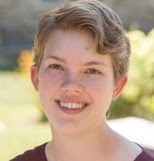
Former TSST team member
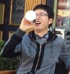
Supernovae · Time-domain surveys
From NASA ADS
Each team member’s three most-cited first-author refereed papers, synchronized weekly from the Astrophysics Data System.
Loading publication data…
Citation counts change over time and are supplied by NASA ADS ↗.
Stay curious
Follow our work as we explore the changing sky with Hubble, Webb, Roman, and the next generation of time-domain surveys.